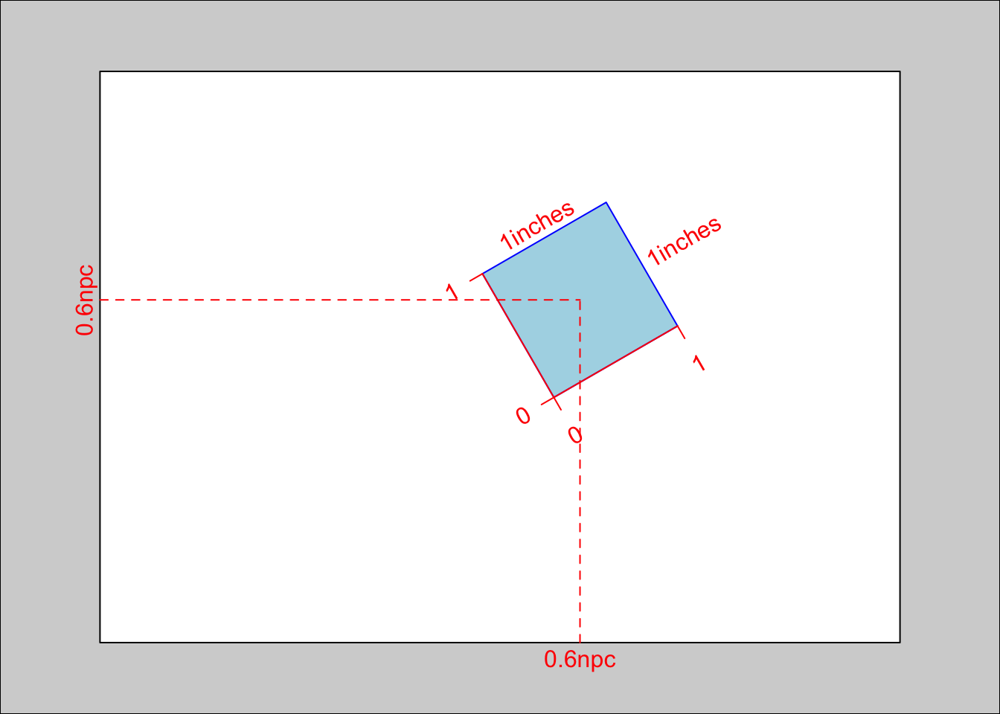
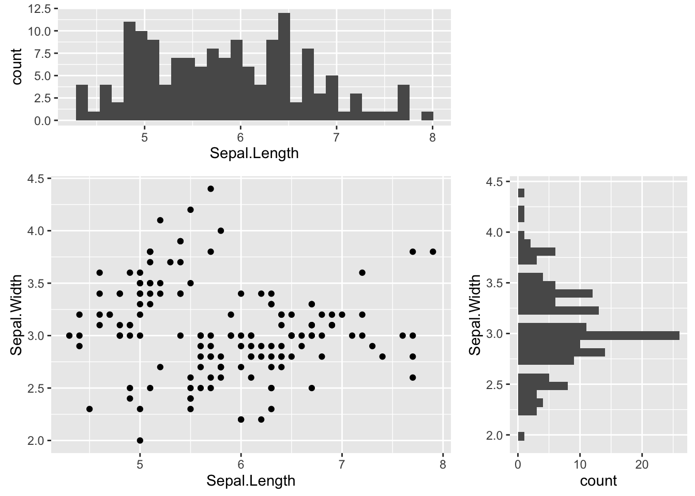
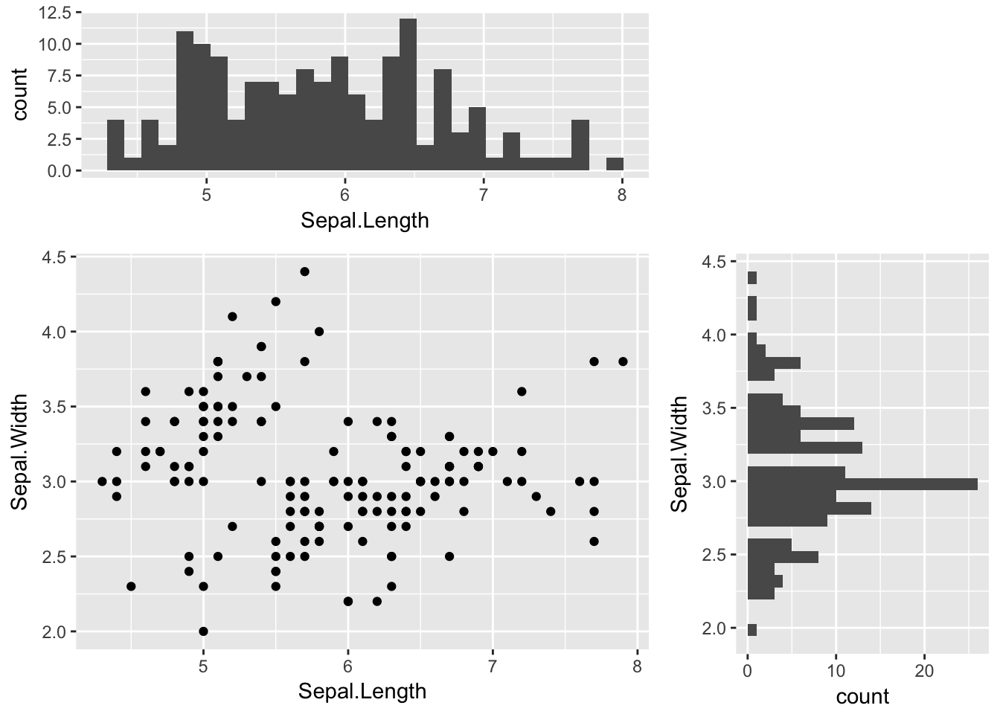
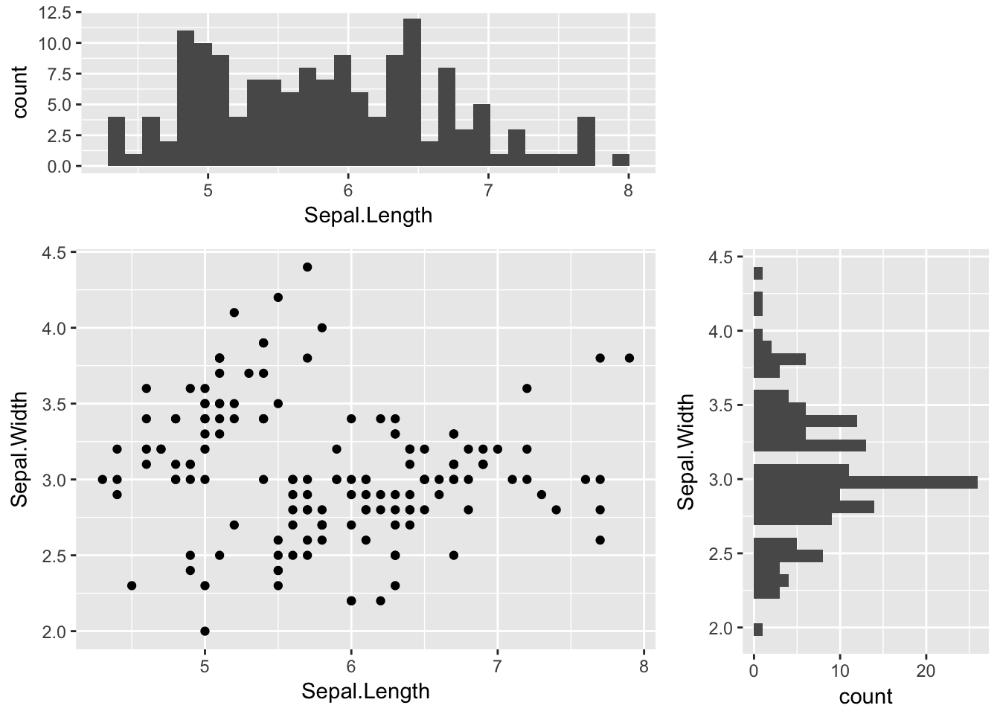

在本博客的ggplot2入门指南一文里提到，ggplot2的facet功能支持快速生成多张相同制作流程的统计图形，但是不能支持生成多张制作流程不同的统计图形。其实这很正常，制作流程不同，那就只能一张一张地制作——那么问题来了：这单独制作的多张图怎么随心所欲地按照你的设想进行摆放呢？
本文将对这个问题展开深入的讨论，代码里用到了R的一个包grid，原来是第三方的，由于其在R图形领域极其重要的地位，现在已经随R语言一同打包下载了。本文详细讲解grid包图形布局的核心概念viewport，并演示三种结合ggplot2绘制上图的方法。
viewport是grid包的核心对象，说简单点就是一个矩形的绘图区域。
创建viewport时，可以指定以下几个重要参数：
通过grid.show.viewport()可以用可视化的方式了解到每个参数的含义：
library(grid)
grid.show.viewport(viewport(x=0.6, y=0.6, width=unit(1, "inches"), height=unit(1, "inches"), angle=30))
ggplot2的绘图结果默认情况下是打开一个全新的页面绘制。如果要在一个页面上绘制多个图形，可以使用print.ggplot()函数。这个函数有一个选项vp，可以指定这个图形要绘制的viewport的位置。绘图过程中可以使用grid.newpage()创建一个全新的空白页面。我们在下面举一个例子：
library(grid)
library(ggplot2)
# prepare ggplot charts
p.hist.len <- ggplot(iris) + geom_histogram(aes(x=Sepal.Length))
p.hist.wid <- ggplot(iris) + geom_histogram(aes(x=Sepal.Width)) + coord_flip()
p.scatter <- ggplot(iris) + geom_point(aes(x=Sepal.Length, y=Sepal.Width))
# create viewports
grid.newpage()
vp.len <- viewport(x=0, y=0.66, width=0.66, height=0.34, just=c("left", "bottom"))
vp.wid <- viewport(x=0.66, y=0, width=0.34, height=0.66, just=c("left", "bottom"))
vp.scatter <- viewport(x=0, y=0, width=0.66, height=0.66, just=c("left", "bottom"))
# direct the charts into the specified viewport
print(p.hist.len, vp=vp.len)
print(p.hist.wid, vp=vp.wid)
print(p.scatter, vp=vp.scatter)
grid可以创建多个viewport，所有的viewport组织成一棵树。grid提供了一套函数用于管理viewport对象。任何一个时刻，有一个当前viewport对象，初始状态下为树的根节点viewport。使用pushViewport()可以将指定的viewport插入到当前viewport的子节点中，同时当前viewport对象移动为刚刚插入的viewport；使用popViewport()可以删除当前viewport，同时当前viewport改为刚刚删除的viewport的父节点；使用upViewport()当前viewport移动到父节点；使用downViewport()当前viewport移动到指定name的子节点；使用seekViewport()在整棵树范围内搜索指定name的viewport，将其设置为当前viewport。
# top left panel
grid.newpage()
vp.len <- viewport(x=0, y=0.66, width=0.66, height=0.34, just=c("left", "bottom"))
pushViewport(vp.len)
print(p.hist.len, newpage=F)
upViewport() # 返回父节点
# bottom right panel
vp.wid <- viewport(x=0.66, y=0, width=0.34, height=0.66, just=c("left", "bottom"))
pushViewport(vp.wid)
print(p.hist.wid, newpage=F)
upViewport()
# bottom left panel
vp.scatter <- viewport(x=0, y=0, width=0.66, height=0.66, just=c("left", "bottom"))
pushViewport(vp.scatter)
print(p.scatter, newpage=F)
upViewport()
viewport还支持行列布局，前面提到viewport函数，还有几个参数我们还没涉及：
grid.layout对象，用于将当前viewport拆分为子区域我们来看一下grid.layout()的参数：
我们来演示下这种方法生成上图的过程：
grid.newpage()
pushViewport(viewport(layout = grid.layout(3, 3)))
print(p.scatter, vp=viewport(layout.pos.row=2:3, layout.pos.col=1:2))
print(p.hist.len, vp=viewport(layout.pos.row=1, layout.pos.col=1:2))
print(p.hist.wid, vp=viewport(layout.pos.row=2:3, layout.pos.col=3))